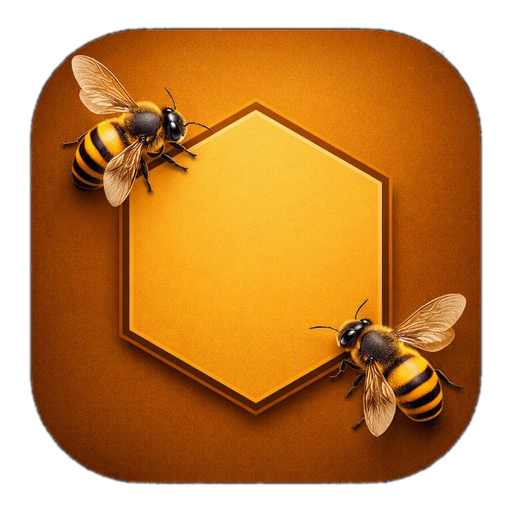

🏠 Panoramica
0
Apiari attivi
0
Famiglie totali
0
Situazioni critiche
0
Visite (ultimi 30gg)

Tutti i dati restano solo su questo dispositivo. Esporta un file JSON per avere una copia di sicurezza o per trasferire i dati su un altro telefono.
Puoi importare un backup completo o unire dati provenienti da altri apicoltori/dispositivi: alla selezione del file ti verrà chiesto se aggiungerli a quelli esistenti o sostituire tutto.
Non cancella i tuoi dati salvati: forza solo il download dell'ultima versione dell'app.
➕ Aggiungi: i dati del file vengono aggiunti a quelli già presenti,
senza toccarli (utile per unire più apiari o importare la demo).
♻️ Sostituisci: tutti i dati attuali vengono cancellati e sostituiti con quelli del file.
Questa app è dedicata al caro amico Nanni Mayer, apicoltore, allevatore e assaggiatore: un vero cultore delle api. La dedica compare anche nella schermata d'avvio dell'app.
L'app gestisce due schede separate: l'apiario (la postazione fisica) e la famiglia (l'arnia), che è indipendente dall'apiario e può essere spostata liberamente tra postazioni mantenendo l'intero storico spostamenti e visite.
Tutto funziona anche senza connessione internet: puoi usare l'app in apiario senza campo, i dati restano salvati sul telefono.
Se vuoi vedere subito l'app popolata prima di iniziare a inserire i tuoi dati reali, in Impostazioni → "Importa backup" puoi caricare il file demo-apiari.json incluso nella cartella del progetto: contiene 3 apiari, 7 famiglie e 19 visite di esempio, con tutti gli stati possibili (attiva, orfana, venduta), uno spostamento tra apiari, un trattamento cumulato e una smielatura già registrata. Una volta provato, puoi cancellarlo da Impostazioni → "Cancella tutti i dati" e ripartire da zero.
Aprendo la scheda di un apiario già creato trovi: i dati generali, l'elenco delle famiglie ospitate in quel momento, il tasto per registrare un trattamento cumulato e, in fondo, il tasto per eliminare l'apiario (possibile solo se non ospita più nessuna famiglia).
Il colore dell'anno regina viene calcolato automaticamente dall'anno di nascita secondo lo standard apistico internazionale a 5 colori (bianco, giallo, rosso, verde, blu) e mostrato nella scheda famiglia.
Con il tasto 🔀 Sposta nella scheda famiglia trasferisci l'arnia in un altro apiario indicando il motivo (nomadismo, sciamatura, riorganizzazione...): lo storico di tutti gli spostamenti resta sempre consultabile nella scheda, insieme allo storico completo delle visite — anche quelle avvenute in apiari diversi da quello attuale.
Tutte le visite registrate restano visibili nella scheda della famiglia, ordinate dalla più recente; toccandone una si apre il dettaglio completo con tasti per modificarla o eliminarla.
Quando un intervento riguarda l'intero apiario (es. trattamento antivarroa di inizio stagione), apri la scheda dell'apiario e tocca "Trattamento cumulato per tutte le famiglie": verrà creata automaticamente una visita rapida per ciascuna famiglia attiva ospitata, con il testo del trattamento indicato. Queste visite non modificano i dati di dettaglio (regina, scorte, patologie) delle famiglie, ma aggiornano comunque la data dell'ultimo controllo ai fini del semaforo.
Ogni famiglia e ogni apiario mostrano un pallino colorato:
Lo stato dell'apiario riflette sempre la situazione più critica tra le famiglie attive ospitate.
Nella scheda Apiari puoi cercare per nome. Nella scheda Famiglie puoi cercare per codice o contenuto delle note, filtrare per apiario di appartenenza e per stato (attive, orfane, unite, morte, vendute) tramite i pulsanti a chip sotto la barra di ricerca.
In Impostazioni → "Esporta backup (JSON)" scarichi un file con tutti i tuoi apiari, famiglie e visite. Conservalo in un posto sicuro (email, cloud personale, computer): è l'unico modo per recuperare i dati se cambi telefono o cancelli la cache del browser. Consigliato farlo regolarmente, ad esempio dopo ogni giro di visite importanti.
In Impostazioni → "Importa backup (JSON)" puoi selezionare uno o più file JSON (anche insieme, ad esempio i backup di più dispositivi o di altri apicoltori/collaboratori). Dopo la selezione l'app chiede come procedere:
Una volta installata, l'app si apre a schermo intero senza barre del browser, con icona e schermata di avvio dedicate.
Quando è disponibile una nuova versione, compare in basso un banner con il messaggio "Nuova versione disponibile". Tocca Aggiorna per applicare subito le novità: la pagina si ricaricherà e tutti i tuoi dati rimarranno invariati. Se qualcosa non funziona correttamente dopo un aggiornamento, prova "Svuota cache e aggiorna app" in Impostazioni: non tocca i dati salvati, forza solo lo scaricamento dell'ultima versione.
Tutti i dati inseriti vengono salvati esclusivamente su questo dispositivo nella memoria locale del browser. Nessuna informazione viene trasmessa a server esterni o terze parti.
Questa app è conforme al Regolamento UE 2016/679 (GDPR) in quanto non tratta
dati personali al di fuori del dispositivo dell'utente.
Titolare: Lazzaro Serva · Via Tasso 28 · 84051 Centola (SA) ·
www.graficaesiti.it
Se compare il messaggio "App non sicura bloccata" di Google Play Protect, non riguarda questa app: quella segnalazione appare per file .apk installati fuori dal Play Store, non per le PWA installate tramite browser.